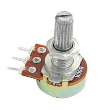

Arduino


Arduino & Lego
Цена: 1 500 & 20 000
Цена деталей: для проектов
Порог вхождения: Сложно & Легко
Проект
Умное освещение
- В этом эксперименте светодиод должен включаться при падении уровня освещенности ниже порога, заданного потенциометром.
- Светодиод загорается от шума и держится определенное время.
Основные компоненты
RGB Светодиод
Для отображения всей палитры оттенков вполне достаточно три цвета (Red — красный, Green — зеленый, Blue — синий).
Смешивая цвета в разной пропорции можно получить практически любой цвет.
Преимущества RGB светодиодов в простоте конструкции, небольших габаритах и высоком КПД светоотдачи.
Вы можете подавать различное значение ШИМ-сигнала в диапазоне от 0 до 255, что позволит получить практически любой цвет из 16 000 000 возможных.
На плате модуля расположен штыревой соединитель имеющий 4 контакта с обозначениями. По одному на каждый цвет и один общий ктод.
Модуль микрофона
На аналоговом выходе АО, в режиме реального времени, появляется напряжение, уровень которого зависит от уровня сигнала, принимаемого микрофоном.
Когда уровень сигнала превышает порог, который устанавливается с помощью подстроечного резистора на плате модуля, то на дискретном выходе D0 появляется сигнала высокого уровня.
-
Данный модуль имеет 4 вывода для подключения к внешним устройствам:
- AD – выход аналогового сигнала
- G – GND
- + - +5V
- D0 – выход дискретного сигнала
Фоторезистор
Фоторезисторы дают возможность определять интенсивность освещения.
Они маленькие, недорогие, требуют мало энергии, легки в использовании, практически не подвержены износу.
Именно из-за этого они часто используются в игрушках, гаджетах и приспособлениях.
Фоторезисторы по своей сути являются резисторами, которые изменяют свое сопротивление (измеряется в Ом) в зависимости от того, какое количество света попадает на их чувствительные элементы.
Подключите одну ногу фоторезистора к 5 В, вторую к аналоговому пину Analog 0. После этого подключите резистор на 10 кОм между Analog 0 и землей.
Потоецеометр

Потенциометры — это регулируемые делители напряжения, которые предназначены для регулирования напряжения при неизменной величине тока, и выполненные по типу переменного резистора.
Наиболее популярным стал переменный однооборотный резистор. Он широко применяется в радиотехнике в качестве регулятора громкости, и в других устройствах.
Подключите левую (или правую) ногу потенциометра к 5В, среднюю к аналоговому пину. Оставшуюся правую (или левую) подключите к земле.
Схема проекта
Проверка оборудования
Scetch
#define blue 6
#define green 3
#define fr A0
#define mic A2
#define pt A4
void setup() {
Serial.begin(9600);
pinMode(blue, OUTPUT);
pinMode(green, OUTPUT);
//тестирование оборудования
digitalWrite(blue, HIGH);
delay(500);
digitalWrite(blue, LOW);
digitalWrite(green, HIGH);
delay(500);
digitalWrite(green, LOW);
}
void loop() {
//считываем показания с датчиков
int fr_val = analogRead(fr);
int mic_val = analogRead(mic);
int pt_val = analogRead(pt);
//выводим данные на монитор портов
//Serial.println(fr_val);
Serial.println(mic_val);
//Serial.println(pt_val);
Serial.println("-----------------");
delay(100);
//сравниваем показания фоторезистора и потонцеометра
bool dark = fr_val < pt_val;
if (dark) {
digitalWrite(blue, HIGH);
}
else {
digitalWrite(blue, LOW);
}
//обрабатываем данные с микрофона
if (mic_val > 48){
digitalWrite(green, HIGH);
delay(3000);
digitalWrite(green, LOW);
}
}
Код проекта находится в рабочей папке: Документы\Arduino\progs\public_lesson